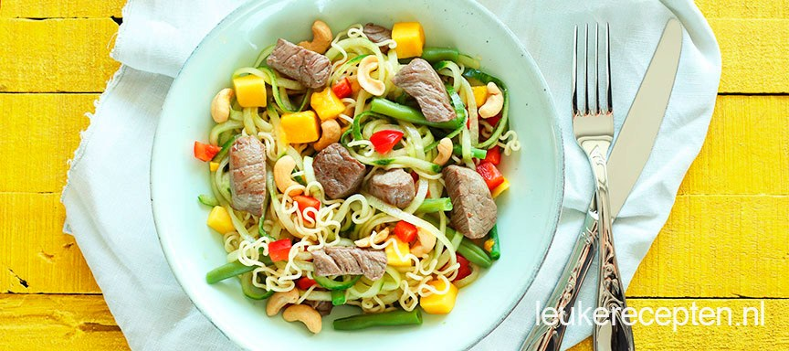

Recept: Noedelsalade

Ingredienten
- 100 gr cashewnoten
- 1 bosui
- 0.5 rode peper
- 2 eetlepels sojasaus (Blue Elephant)
- 2 eetlepels oestersaus (Blue Elephant)
- 1 eetlepel bruine suiker
- 1 ui
- 2 knoflook
- Scheutje sesamolie
- 6 blaadjes romaine sla
Bereiding
-
Kook de noedels volgens de aanwijzingen op de verpakking, spoel af met
koud water en zet even weg. Was de sperziebonen, snijd de uiteinden
ervan af en kook ze 10 minuten. Giet af en laat ook even staan. Rasp de
komkommer in slierten met de spiraal- of juliënnesnijder. Als je deze
niet hebt, gebruik dan een kaasschaaf en snijd de plakken dan in zo dun
mogelijke slierten. Snijd ook de mango en de paprika in blokjes. Maak de
dressing door in een kommetje de sojasaus, honing, witte wijnazijn en
een geperste teen knoflook door elkaar te roeren.
-
Verwarm wat olijfolie of boter in een pan en bak de biefstukpuntjes
totdat ze medium gebakken zijn. Roer de noedels, komkommerslierten,
paprika, mango, biefstukpuntjes en sperziebonen samen met de dressing op
2 borden door elkaar en maak af met wat cashewnoten.